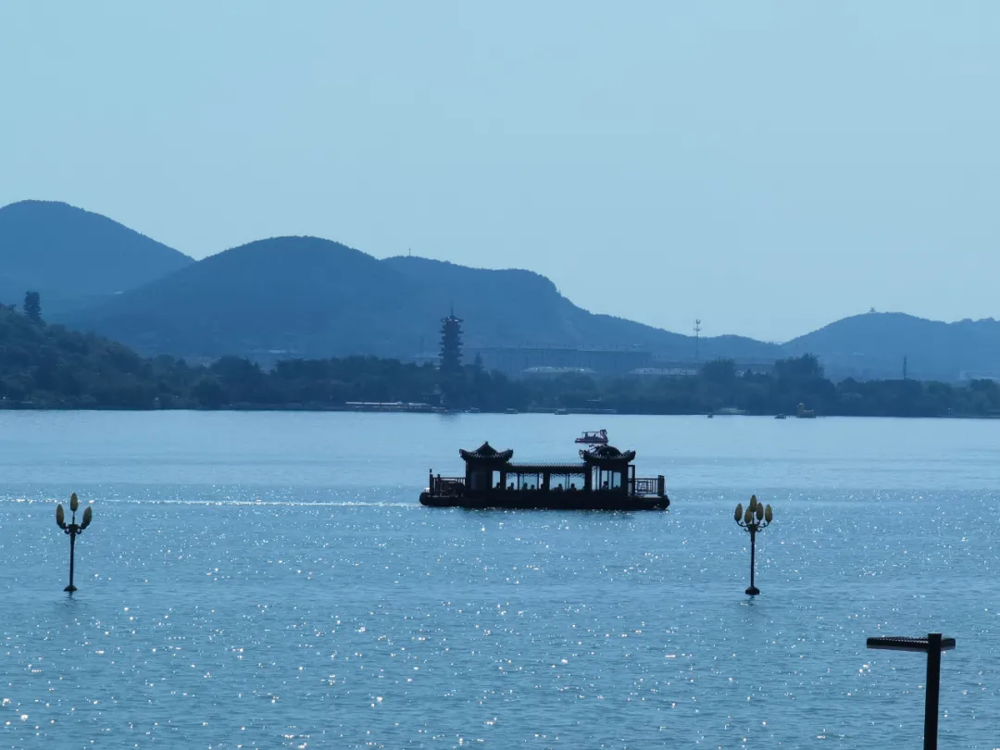
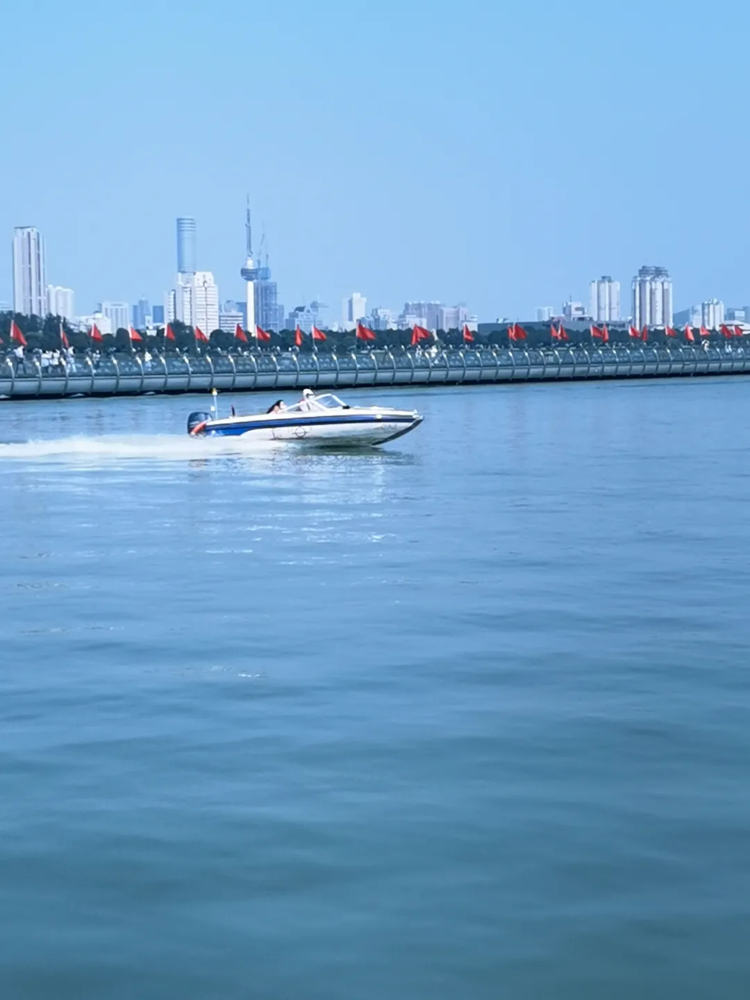
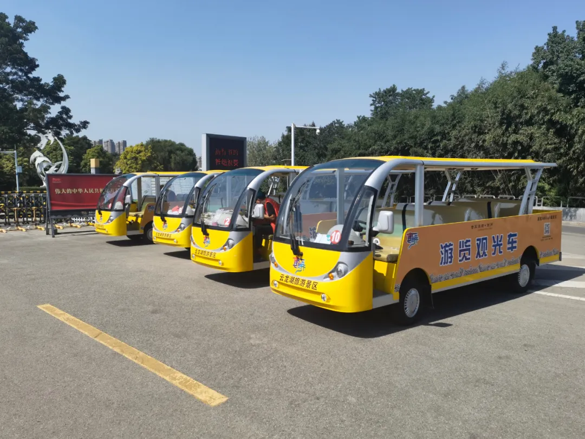

游乐项目
游船
1.电动自划船
目前，云龙湖景区自营码头共有8处，在8处码头游客均可乘坐特色电动自划船（大黄鸭船、火烈鸟船、海豚船、毛毛虫船等）。
电动自划船：8个码头（在哪乘船在哪归还）
云龙湖东湖码头（4个）：沙月岛码头、杏花坞码头、苏公塔码头、断桥码头
小南湖码头（4个）：老子水居码头、解忧桥码头、南湖一号码头、沉水廊道码头
4人座电动自划船120元/小时，6人座电动自划船140元/小时。
2.仿古画舫环湖观光
仿古画舫船：4个码头始发，4个码头可到达
云龙湖东湖码头（4个）：沙月岛码头、杏花坞码头、苏公塔码头、音乐厅码头
画舫船票价为60元/人/次，环湖时长约40分钟。
游客在云龙湖东湖的4处码头乘坐画舫船，可在湖面尽赏风景旖旎的云龙山云龙湖美景，畅游湖上，享受休闲惬意时光。

3.快艇极速体验
快艇：6个码头始发，6个码头可到达
云龙湖东湖码头（4个）：沙月岛码头、杏花坞码头、苏公塔码头、音乐厅码头
小 南 湖 码 头（2个）：老子水居码头、沉水廊道码头
快艇票价为60元/人/次。
游客可在6处码头乘坐快艇，在湖面上体验极速快感，享受风驰电掣的感觉，同时也可速览云龙湖美景。
4.摇橹船水上休闲
摇橹船：2个码头始发，6个码头可到达
（1）始发码头：
云龙湖东湖码头（1个）：沙月岛码头
小南湖码头（1个）：沉水廊道码头
（2）到达码头：
云龙湖东湖码头（4个）：沙月岛码头、杏花坞码头、苏公塔码头、音乐厅码头
小南湖码头（2个）：老子水居码头、沉水廊道码头
摇橹船票价为60元/人/次。
摇橹船可容纳12人乘坐，闲暇之时，可邀约好友或家人乘船环湖游览云龙湖美景，在游览同时，船上还设有餐桌，游客可在船上将美景美食同享。
环湖游览观光车
云龙湖游览观光车行驶线路分为湖东线与湖西线两条线路。
湖东线以参观游览和水上活动为主，共设11处站点。
滨湖公园东门站→寿石广场站→音乐厅站→水族馆站→天师岭瀑布站→沉水廊道站→苏公桥站→小南湖码头站→解忧桥站→老子水居站（节假日关闭）→南湖水街站（节假日关闭）。
湖西线以参观人文景观游览为主，共设6处站点。
滨湖公园西门站→音乐厅站→水族馆站→好人园站→望湖阁游客中心站→玉带路站。
游览观光车票价为10元/人/次，30元/人/4次。

索道
云龙山索道位于风景优美的云龙湖畔，穿越于云龙山脉之间。索道全长1200米，垂直高度88米，西起果树盆艺园，中间站与观景台相对，东站与南郊彭园相对，斜跨云龙山。索道将整个南郊风景区联成一体，形成“水、陆、空”立体交通体系。游人在索道上可凌空鸟瞰云龙湖，风光美景尽收眼底。
索道票价60元/人。